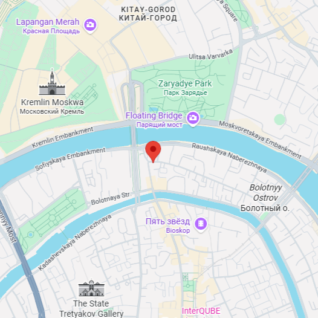
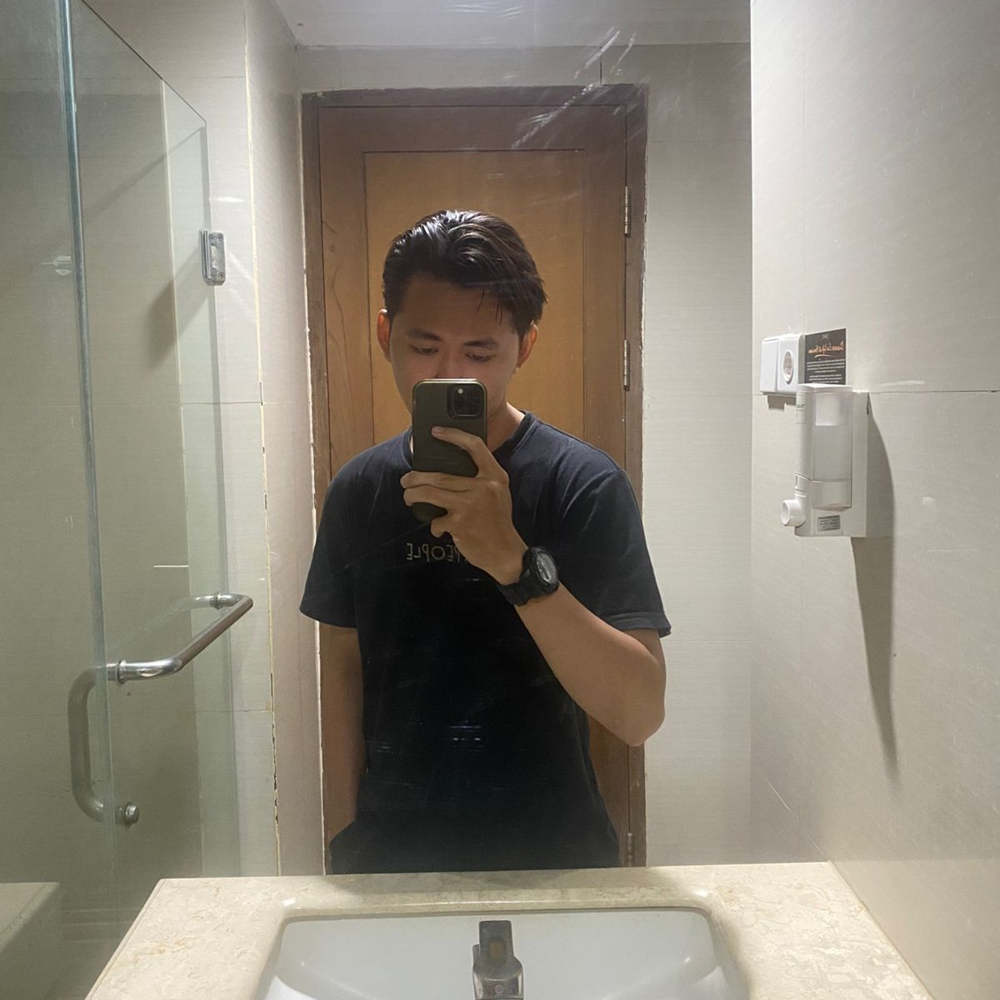
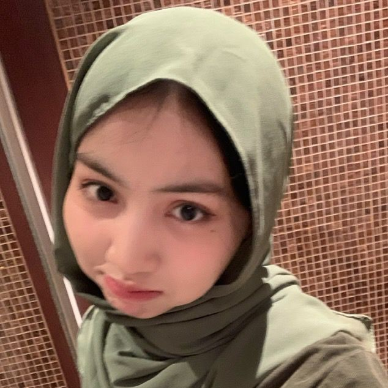
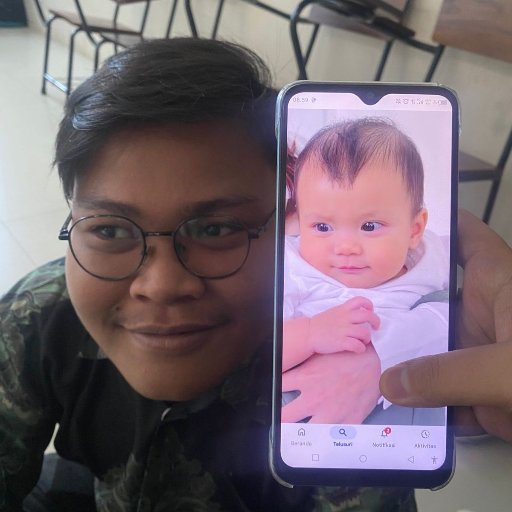

Ikuti Kami di Media Sosial
Dapatkan update promo terbaru, info produk, dan konten menarik lainnya.


Mengenal lebih dekat sejarah dan perjalanan kami dalam menghadirkan jam tangan premium untuk generasi modern di seluruh Indonesia.
Kamu dapat mengunjungi toko fisik kami untuk melihat langsung koleksi jam tangan premium. Berikut adalah alamat dan denah lokasi Classic Timepiece.

Sadovnicheskaya St, 1, Moskva, Rusia, 115035
Dapatkan update promo terbaru, info produk, dan konten menarik lainnya.
Classic Timepiece dibangun oleh tim yang berdedikasi pada dunia horologi dan retail modern. Kami berkomitmen menghadirkan layanan terbaik dan produk berkualitas tinggi untuk seluruh pelanggan.

Founder & CEO

Co-Founder & Marketing Lead

Ga tau siapa